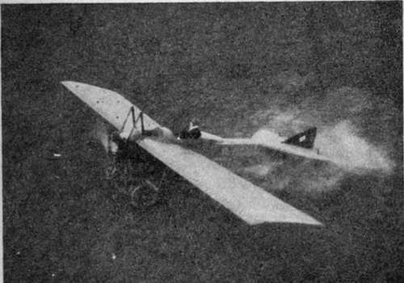

Flying Machines Of To-Day. Part 2
Description
This section is from the book "All About Flying", by Gertrude Bacon. Also available from Amazon: All About Flying.
Flying Machines Of To-Day. Part 2
Until recently, when the swift tractor biplanes became a power in the land, the monoplane had it all its own way in the matter of speed, and the great racing machines have all been of monoplane type. Certainly the first time the Gordon-Bennett (the great international aerial race which is the 'blue ribbon' of the skies) was flown, it was won by a biplane—the American Curtiss. But that was at the very beginning of flight, when aeroplanes had barely emerged from the chrysalis stage, and the majority of them were caterpillars merely, so that 48 miles an hour was sufficient to transfix the crowd with amazement and bear off the prize. A year later Grahame-White won the race and secured the honour for this country by flying in a Bleriot at 61 miles an hour. Next year America won it once more in the person of Weymann flying at 78 miles an hour in a Nieuport. The Nieuport was one of the first monoplanes to have an entirely covered-in bird-shaped fuselage. In their efforts to add to the speed by reducing the head resistance, constructors have aimed at attaining stream-line shape for the bodies of their craft, and as a result these resemble more and more Nature's practised flyers of several millions of years' experience. There is something uncannily bird-like in the Nieuport and other great racing monoplanes (such as the Morane-Saulnier, winner of 'Aerial Derbies ' and other triumphs, or the Ponnier, successor to the well-known Hanriot), with their plump rounded bodies and well-developed 'crops' ; and a good deal that is terrifying about their sightless heads and suggestion of blind, tremendous power.
Still in pursuit of speed, the French constructors next evolved the 'monocoque' body, where, instead of being an angular wooden framework covered with material, the fuselage is a perfectly smooth, hollow, torpedo-shaped tube elaborately built up of extremely thin wood or metal, or even of a sort of papier mache, around a core which is subsequently removed. With head resistance thus reduced to the last degree, and extremely powerful engines, Depurdussin monoplanes won the fourth and fifth Gordon-Bennett races (piloted by Vedrines and Prevost) at 105 and 124 miles an hour—the last well over 2 miles a minute ! The 'Dep' machines have had wide popularity ; it was a sad blow for the French flying industry when in August 1913 M. Depurdussin was arrested for colossal frauds and his famous company went into liquidation.
(Flight)
Morane-Saulnier.
At one time there was considerable discussion as to the safety of the monoplane, the belief being held, in some quarters, after an unlucky series of accidents, that it was a more dangerous craft than the biplane ; and for a while monoplane flying was abandoned in the army. Careful investigation, however, failed to prove the point. The fact that a monoplane pilot cannot see so well, because the great wings on either side of him restrict his downward view, is now being got over by attaching the wings above the fuselage and leaving room for the aviator to look out underneath them. A monoplane made in this way is known as a 1 parasol,' and during the War the plan has come into favour. The propeller in the front does not seriously interfere with the pilot's view, since, because of its rapid revolution, it is possible to look right through it, and its presence does not hide, but only slightly darkens, the prospect.
(The Aeroplane)
Depurdussin.
Turn we now to the biplanes, and in grateful acknowledgment let us glance first at the original American Wright machine—the first aeroplane that ever flew.
If we saw one of these quaint machines now— and he who can recall them is a perfect greybeard of aviation, though in point of years no hair of his head need have whitened—the first thing that would strike us is how low on the ground it sat. The Wright biplane was evolved straight away from a glider— was indeed but a glider fitted with an engine—and so, like a glider, it began its flying from aloft and not on the ground. Therefore it was not burdened with wheels on which to run along to gather speed, for indeed its feeble engine was incapable of raising it unaided from the earth; but in order to begin its flight, it was shot catapult-fashion down a long wooden rail by the force of a heavy weight let fall from the top of a little tower. This was ingenious but inconvenient, since it could scarcely carry its tower and rails about with it on a cross-country flight, and without them it was useless. Presently it was found that the tower could be dispensed with, and the rail, along which the machine ran to gather speed, alone was used, and formed a noteworthy feature at the first flying meetings. One of the earliest Wrights to be fitted with wheels was flown by Mr. Ogilvie at Lanark in 1910.
The early Wright was therefore a 'skid 9 machine mounted on skids or sledge-runners. There was a big double elevator in front, double rudder, but no tail, behind. It had two propellers at the back of the wings, driven by chains off a four-cylinder 24 horsepower engine that the Wrights designed and built themselves; and, as we know, it warped its wings. Though the Wright biplanes of the present day have wheels and a tail and have dropped the forward elevator, they are wonderfully similar to the early machines which first proved to the world that flight had arrived.
The American Wright biplane was the first machine to make flight practicable, but the French Henry Farman biplane was the first to make it popular. Most famous of the French biplanes, it has been the prototype of innumerable imitations and variations, and its advent in the early days of aviation was an epoch-making event. The old Henry Farman has been familiar to us since the first aviation meetings and the London to Manchester race. Looking at one of the original machines to-day, we see that the two main planes are of the same length, some 35 feet in span, and though well cambered, they differ from most other planes in being 'single surfaced' or covered with only one layer of material stretched over the top. The trailing edges of these planes are not continuous, but at each end a portion dangles downwards in a loose hinged flap. These are the ' ailerons' ; in flight they are blown out level with the planes by the force of the wind, but, by means of controlling wires brought to a lever at the pilot's seat, they can be pulled down when needed. There are many wires about an early Farman machine. The bracing wires are divided into two sets: the 'flight' wires which hold the structure together in flight, and the 'rolling' wires which take the strain of running along the ground. The youthful aviator has to learn the difference between these wires, which, to his budding intelligence, may be reminiscent of a bird-cage.
(Flight)
Henry Farman Biplane. Old Style.
(The Aeroplane)
Henry Farman Biplane, New Style.
Continue to:
- prev: Chapter III. Flying Machines Of To-Day
- Table of Contents
- next: Flying Machines Of To-Day. Part 3